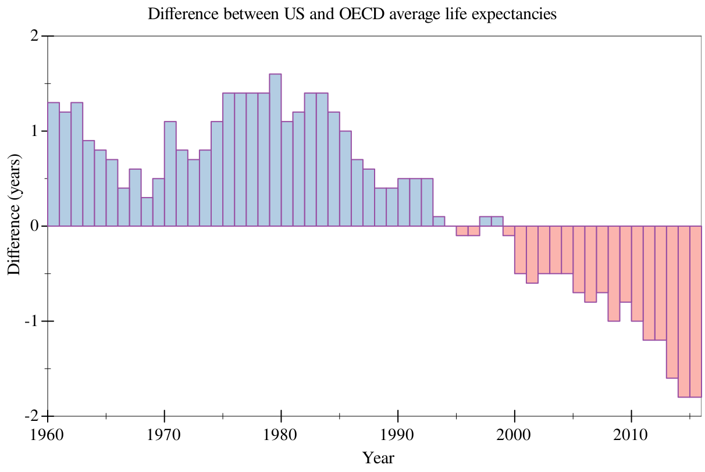

Graphite: A data visualization library
| (require graphite) | package: graphite-lib |
Graphite is a library designed for producing specific kinds of common graphs/plots, while making decisions about the data being plotted. Graphite is designed to switch between different types of plots relatively seamlessly, without changing anything about the underlying data’s structure.
Graphite is built on top of, and does not replace, plot. For many applications (e.g. 3D plotting, continuous data, interactive plots, etc), plot will be a far better fit.
All of the data-sets that are referred to in this documentation (organdata, oecd, etc) are available here.
A tutorial on graphite is also available; Graphite: a guided tour.
1 Graphing Procedures
procedure
(graph #:data data #:mapping mapping [ #:width width #:height height #:title title #:x-label x-label #:x-transform x-transform #:x-conv x-conv #:x-min x-min #:x-max x-max #:y-label y-label #:y-transform y-transform #:y-conv y-conv #:y-min y-min #:y-max y-max #:facet-wrap facet-wrap #:legend-anchor legend-anchor #:theme theme] renderer ...) → pict? data : data-frame? mapping : aes? width : (or/c rational? #f) = (plot-width) height : (or/c rational? #f) = (plot-height) title : (or/c string? pict? #f) = (plot-title) x-label : (or/c string? pict? #f) = #f x-transform : (or/c transform? #f) = #f x-conv : (or/c (-> any/c real?) #f) = #f x-min : (or/c rational? #f) = #f x-max : (or/c rational? #f) = #f y-label : (or/c string? pict? #f) = #f y-transform : (or/c transform? #f) = #f y-conv : (or/c (-> any/c real?) #f) = #f y-min : (or/c rational? #f) = #f y-max : (or/c rational? #f) = #f facet-wrap : (or/c positive-integer? #f) = #f legend-anchor : legend-anchor/c = (plot-legend-anchor) theme : graphite-theme? = theme-default renderer : graphite-renderer?
Every column is a variable.
Every row is an observation.
Every cell is a single value.
The required argument #:mapping takes a aes? that dictates aesthetics to be applied to every renderer in the specified tree. Generally, you will want at least an x-axis (#:x).
The #:x-conv and #:y-conv arguments, if given, perform pre-processing of the x-axis and y-axis variable (when said variables are not automatically determined). For example, if you wanted to place dates on the x-axis, this could be a function converting your preferred date format to seconds since the UNIX epoch.
The #:x-transform and #:y-transform arguments, if given, take a transform? to adjust the x and y axes, as well as the ticks. For example, if you wanted to place a logarithmic transform on the x-axis, you could specify logarithmic-transform. Transforms are applied after the respective #:x-conv or #:y-conv function, if present.
When given, the #:x-min (etc.) arguments determine the bounds of the plot, but not the bounds of the individual renderers. For this, the data should be trimmed before being passed in.
The aesthetic #:facet, specified in the #:mapping argument, dictates whether to facet on a single categorical variable. If this is selected, Graphite will split the plot into subplots based on that variable, into a grid. This aesthetic will cause unexpected behavior if not applied globally.
The optional #:facet-wrap argument dictates how many columns should be drawn before wrapping to a new line. By default, this is the square root of the number of observations in the #:facet variable, creating a grid.
procedure
pict : pict? path : path-string?
2 Aesthetic Mappings
Aesthetic mappings are used to map a given "aesthetic" (such as the x-axis, y-axis, or color) to a variable. When doing this, the given aesthetic will be "split" on that variable. Every renderer, as well as graph, takes an aesthetic mapping using the #:mapping keyword.
These objects are generally passed with the #:mapping keyword to either the graph procedure or to each individual graphite-renderer? in the render tree. They dictate various aesthetics, dictating how to display the data (such as colors, variables, et cetera), with behavior being dictated by each renderer.
procedure
(aes-with/c #:<key> contract ...) → contract?
contract : contract?
procedure
(aes-containing/c #:<key> contract ...) → contract?
contract : contract?
3 Renderers
struct
(struct graphite-renderer (function metadata))
function : (-> (treeof (or/c renderer2d? nonrenderer?))) metadata : (listof (cons/c parameter? any/c))
Contains both a thunk returning a plot render tree, and an association list of parameters (generally plot parameters) to values, used when a renderer requires certain parameters to be set.
procedure
(points [ #:x-min x-min #:x-max x-max #:y-min y-min #:y-max y-max #:sym sym #:color color #:fill-color fill-color #:x-jitter x-jitter #:y-jitter y-jitter #:size size #:line-width line-width #:alpha alpha #:label label #:mapping local-mapping]) → graphite-renderer? x-min : (or/c rational? #f) = #f x-max : (or/c rational? #f) = #f y-min : (or/c rational? #f) = #f y-max : (or/c rational? #f) = #f sym : point-sym/c = (point-sym) color : plot-color/c = (point-color) fill-color : (or/c plot-color/c 'auto) = 'auto x-jitter : (>=/c 0) = (point-x-jitter) y-jitter : (>=/c 0) = (point-y-jitter) size : (>=/c 0) = (point-size) line-width : (>=/c 0) = (point-line-width) alpha : (real-in 0 1) = (point-alpha) label : (or/c string? pict? #f) = #f
local-mapping :
(aes-containing/c #:x string? #:y string? #:facet (or/c string? #f) #:discrete-color (or/c string? #f) #:continuous-color (or/c string? #f)) = (aes)
> (define (random-data) (build-vector 50 (λ (_) (random -50 50)))) > (define df (make-data-frame)) > (df-add-series! df (make-series "x-var" #:data (random-data))) > (df-add-series! df (make-series "y-var" #:data (random-data)))
> (graph #:data df #:mapping (aes #:x "x-var" #:y "y-var") (points))
> (graph #:data organdata #:mapping (aes #:x "donors" #:y "country") (points))
The optional #:discrete-color aesthetic dictates a variable to split on by color, in discrete groups.
Similarly, the #:continuous-color aesthetic dictates a continuous (numeric) variable to split on by color. You likely want to use a continuous colormap (see theme-continuous) for this. Legends for continuous colors are not currently supported. We are working on it.
procedure
(fit [ #:x-min x-min #:x-max x-max #:y-min y-min #:y-max y-max #:samples samples #:color color #:width width #:style style #:alpha alpha #:label label #:method method #:span span #:degree degree #:show-equation? show-equation? #:mapping local-mapping]) → graphite-renderer? x-min : (or/c rational? #f) = #f x-max : (or/c rational? #f) = #f y-min : (or/c rational? #f) = #f y-max : (or/c rational? #f) = #f samples : (and/c exact-integer? (>=/c 2)) = (line-samples) color : plot-color/c = (line-color) width : (>=/c 0) = (line-width) style : plot-pen-style/c = (line-style) alpha : (real-in 0 1) = (line-alpha) label : (or/c string? pict? #f) = #f method : (or/c 'poly 'loess) = 'poly span : (real-in 0 1) = span degree : positive-integer? = 1 show-equation? : boolean? = #f
local-mapping :
(aes-containing/c #:x string? #:y string? #:facet (or/c string? #f)) = (aes)
> (define noise '(1/9 -1/7 0 1/3 -1 1/9)) > (define df (make-data-frame)) > (df-add-series! df (make-series "x-var" #:data (build-vector 6 add1)))
> (df-add-series! df (make-series "y-var" #:data (build-vector 6 (λ (x) (+ x (list-ref noise x))))))
> (graph #:data df #:mapping (aes #:x "x-var" #:y "y-var") (points) (fit #:width 3 #:label "Linear") (fit #:method 'loess #:color 'red #:style 'dot #:width 3 #:label "LOESS"))
The optional #:degree argument specifies the degree of the fit line (2 for a second-degree polynomial, et cetera) in the case of the 'poly method, or the degree of each local fit in the case of 'loess.
See the documentation for loess-fit for details on the #:span parameter.
The optional #:show-equation? argument specifies whether to show the full fit equation in the legend. As LOESS is a non-parametric fit, this requires the 'poly method.
procedure
(lines [ #:x-min x-min #:x-max x-max #:y-min y-min #:y-max y-max #:color color #:width width #:style style #:alpha alpha #:label label #:mapping local-mapping]) → graphite-renderer? x-min : (or/c rational? #f) = #f x-max : (or/c rational? #f) = #f y-min : (or/c rational? #f) = #f y-max : (or/c rational? #f) = #f color : plot-color/c = (line-color) width : (>=/c 0) = (line-width) style : plot-pen-style/c = (line-style) alpha : (real-in 0 1) = (line-alpha) label : (or/c string? pict? #f) = #f
local-mapping :
(aes-containing/c #:x string? #:y string? #:facet (or/c string? #f) #:discrete-color (or/c string? #f)) = (aes)
> (define df (make-data-frame))
> (define-values (xs ys) (for/fold ([xs (list 0)] [ys (list 0)]) ([i (in-range 1 200)]) (values (cons i xs) (cons (+ (first ys) (* 1/100 (- (random) 1/2))) ys)))) > (df-add-series! df (make-series "x-var" #:data (list->vector xs))) > (df-add-series! df (make-series "y-var" #:data (list->vector ys)))
> (graph #:data df #:mapping (aes #:x "x-var" #:y "y-var") (lines #:label "Random walk"))
procedure
(error-bars #:mapping local-mapping [ #:x-min x-min #:x-max x-max #:y-min y-min #:y-max y-max #:color color #:line-width line-width #:line-style line-style #:width width #:alpha alpha #:invert? invert?]) → graphite-renderer?
local-mapping :
(and/c (aes-with/c #:perc-error? string?) (aes-containing/c #:x string? #:y string? #:facet (or/c string? #f))) x-min : (or/c rational? #f) = #f x-max : (or/c rational? #f) = #f y-min : (or/c rational? #f) = #f y-max : (or/c rational? #f) = #f color : plot-color/c = (error-bar-color) line-width : (>=/c 0) = (error-bar-line-width) line-style : plot-pen-style/c = (error-bar-line-style) width : (>=/c 0) = (error-bar-width) alpha : (real-in 0 1) = (error-bar-alpha) invert? : boolean? = #f
The mandatory aesthetic #:perc-error? dictates the variable in the data-frame that corresponds to percent error. The procedure df-add-derived! may be useful for adding this to a data-frame.
> (define (3x^2 x) (* 3.0 (expt x 2.0))) > (define (add-error y) (+ y (* y (/ (- (random 4) 2) 10.0)))) > (define df (make-data-frame)) > (df-add-series! df (make-series "x" #:data (build-vector 10 add1)))
> (df-add-series! df (make-series "3x^2" #:data (build-vector 10 (compose add-error 3x^2 add1)))) > (df-add-series! df (make-series "err" #:data (make-vector 10 0.2)))
> (graph #:data df #:mapping (aes #:x "x" #:y "3x^2") (points) (fit #:degree 2) (error-bars #:mapping (aes #:perc-error "err")))
procedure
(bar [ #:x-min x-min #:x-max x-max #:y-min y-min #:y-max y-max #:gap gap #:skip skip #:invert? invert? #:color color #:style style #:line-color line-color #:line-width line-width #:line-style line-style #:alpha alpha #:label label #:add-ticks? add-ticks? #:far-ticks? far-ticks? #:mode mode #:group-gap group-gap #:mapping local-mapping]) → graphite-renderer? x-min : (or/c rational? #f) = 0 x-max : (or/c rational? #f) = #f y-min : (or/c rational? #f) = 0 y-max : (or/c rational? #f) = #f gap : (real-in 0 1) = (discrete-histogram-gap) skip : (>=/c 0) = (discrete-histogram-skip) invert? : boolean? = (discrete-histogram-invert?) color : plot-color/c = (rectangle-color) style : plot-brush-style/c = (rectangle-style) line-color : plot-color/c = (rectangle-line-color) line-width : (>=/c 0) = (rectangle-line-width) line-style : plot-pen-style/c = (rectangle-line-style) alpha : (real-in 0 1) = (rectangle-alpha) label : (or/c string? pict? #f) = #f add-ticks? : boolean? = #t far-ticks? : boolean? = #f mode : (or/c 'count 'prop) = 'count group-gap : (>=/c 0) = 1
local-mapping :
(aes-containing/c #:x string? #:facet (or/c string? #f) #:group (or/c string? #f)) = (aes)
The #:mode argument dictates whether the y-axis should be the count of observations by the x-axis ('count), or the relative frequency of those observations ('prop).
The optional #:group aesthetic dictates whether the bar should be "dodged", with each bar being broken up into bars based on the group. If this is enabled, the #:group-gap argument dictates the space between each sub-chart.
procedure
(stacked-bar [ #:x-min x-min #:x-max x-max #:y-min y-min #:y-max y-max #:gap gap #:skip skip #:invert? invert? #:colors colors #:styles styles #:line-colors line-colors #:line-widths line-widths #:line-styles line-styles #:alphas alphas #:labels labels #:add-ticks? add-ticks? #:far-ticks? far-ticks? #:mode mode #:mapping local-mapping]) → graphite-renderer? x-min : (or/c rational? #f) = #f x-max : (or/c rational? #f) = #f y-min : (or/c rational? #f) = 0 y-max : (or/c rational? #f) = #f gap : (real-in 0 1) = (discrete-histogram-gap) skip : (>=/c 0) = (discrete-histogram-skip) invert? : boolean? = (discrete-histogram-invert?) colors : (plot-colors/c nat/c) = (stacked-histogram-colors)
styles : (plot-brush-styles/c nat/c) = (stacked-histogram-styles)
line-colors : (plot-colors/c nat/c) = (stacked-histogram-line-colors)
line-widths : (pen-widths/c nat/c) = (stacked-histogram-line-widths)
line-styles : (plot-pen-styles/c nat/c) = (stacked-histogram-line-styles) alphas : (alphas/c nat/c) = (stacked-histogram-alphas) labels : (labels/c nat/c) = '(#f) add-ticks? : boolean? = #t far-ticks? : boolean? = #f mode : (or/c 'count 'prop) = 'count
local-mapping :
(aes-containing/c #:x string? #:facet (or/c string? #f) #:group string?) = (aes)
The mandatory #:group aesthetic dictates what variable each bar should be broken up by.
The #:mode argument dictates whether the y-axis should be the count of observations by the x-axis ('count), or the relative frequency of those observations ('prop). 'prop does not make much sense for stacked bar charts (everything is 100% of itself), but it can be useful in some scenarios.
procedure
(col [ #:x-min x-min #:x-max x-max #:y-min y-min #:y-max y-max #:color color #:style style #:line-color line-color #:line-width line-width #:line-style line-style #:alpha alpha #:label label #:gap gap #:baseline baseline #:mapping local-mapping]) → graphite-renderer? x-min : (or/c rational? #f) = #f x-max : (or/c rational? #f) = #f y-min : (or/c rational? #f) = #f y-max : (or/c rational? #f) = #f color : plot-color/c = (rectangle-color) style : plot-brush-style/c = (rectangle-style) line-color : plot-color/c = (rectangle-line-color) line-width : (>=/c 0) = (rectangle-line-width) line-style : plot-pen-style/c = (rectangle-line-style) alpha : (real-in 0 1) = (rectangle-alpha) label : (or/c string? pict? #f) = #f gap : real? = 0 baseline : real? = 0
local-mapping :
(aes-containing/c #:x string? #:y string? #:discrete-color (or/c string? #f) #:facet (or/c string? #f)) = (aes)
The optional #:gap argument specifies the gap between each bar.
The optional #:baseline argument specifies the baseline of the "x-axis". For example, if you wanted all columns with values above 20 to be above the "x-axis", and all below 20 to be below it, you would set this to be 20.
> (define simple (make-data-frame)) > (df-add-series! simple (make-series "trt" #:data (vector "a" "b" "c"))) > (df-add-series! simple (make-series "outcome" #:data (vector 2.3 1.9 3.2)))
> (graph #:data simple #:mapping (aes #:x "trt" #:y "outcome") (col #:gap 0.25))
> (graph #:data oecd #:mapping (aes #:x "year" #:y "diff") #:title "Difference between US and OECD average life expectancies" #:x-label "Year" #:y-label "Difference (years)" #:y-min -2 #:y-max 2 #:width 600 #:height 400 #:legend-anchor 'no-legend (col #:mapping (aes #:discrete-color "hi_lo"))) 
procedure
(histogram [ #:x-min x-min #:x-max x-max #:y-min y-min #:y-max y-max #:color color #:style style #:line-color line-color #:line-width line-width #:line-style line-style #:alpha alpha #:label label #:bins bins #:mapping local-mapping]) → graphite-renderer? x-min : (or/c rational? #f) = #f x-max : (or/c rational? #f) = #f y-min : (or/c rational? #f) = #f y-max : (or/c rational? #f) = #f color : plot-color/c = (rectangle-color) style : plot-brush-style/c = (rectangle-style) line-color : plot-color/c = (rectangle-line-color) line-width : (>=/c 0) = (rectangle-line-width) line-style : plot-pen-style/c = (rectangle-line-style) alpha : (real-in 0 1) = (rectangle-alpha) label : (or/c string? pict? #f) = #f bins : positive-integer? = 30
local-mapping :
(aes-containing/c #:x string? #:y (or/c string? #f) #:facet (or/c string? #f)) = (aes)
The argument #:bins dictates the number of bins on the x-axis.
The optional #:y aesthetic will be the average of every observation in the given x-axis bin. If not specified, this will default to the count of the number of elements in the bin. Anecdotally, if you use this, you may be better off with points or lines.
procedure
(density [ #:x-min x-min #:x-max x-max #:y-min y-min #:y-max y-max #:samples samples #:color color #:width width #:style style #:alpha alpha #:label label #:mapping local-mapping]) → graphite-renderer? x-min : (or/c rational? #f) = #f x-max : (or/c rational? #f) = #f y-min : (or/c rational? #f) = #f y-max : (or/c rational? #f) = #f samples : (and/c exact-integer? (>=/c 2)) = (line-samples) color : plot-color/c = (line-color) width : (>=/c 0) = (line-width) style : plot-pen-style/c = (line-style) alpha : (real-in 0 1) = (line-alpha) label : (or/c string? pict? #f) = #f
local-mapping :
(aes-containing/c #:x string? #:facet (or/c string? #f) #:discrete-color (or/c string? #f)) = (aes)
procedure
(boxplot [ #:invert? invert? #:iqr-scale iqr-scale #:gap gap #:box-color box-color #:box-style box-style #:box-line-color box-line-color #:box-line-width box-line-width #:box-line-style box-line-style #:box-alpha box-alpha #:show-outliers? show-outliers? #:outlier-color outlier-color #:outlier-sym outlier-sym #:outlier-fill-color outlier-fill-color #:outlier-size outlier-size #:outlier-line-width outlier-line-width #:outlier-alpha outlier-alpha #:show-whiskers? show-whiskers? #:whiskers-color whiskers-color #:whiskers-width whiskers-width #:whiskers-style whiskers-style #:whiskers-alpha whiskers-alpha #:show-median? show-median? #:median-color median-color #:median-width median-width #:median-style median-style #:median-alpha median-alpha #:mapping local-mapping]) → graphite-renderer? invert? : boolean? = #f iqr-scale : real? = 1.5 gap : (real-in 0 1) = (discrete-histogram-gap) box-color : plot-color/c = (rectangle-color) box-style : plot-brush-style/c = (rectangle-style) box-line-color : plot-color/c = (rectangle-line-color) box-line-width : (>=/c 0) = (rectangle-line-width) box-line-style : plot-pen-style/c = (rectangle-line-style) box-alpha : (real-in 0 1) = (rectangle-alpha) show-outliers? : boolean? = #t outlier-color : plot-color/c = (point-color) outlier-sym : point-sym/c = (point-sym) outlier-fill-color : (or/c plot-color/c 'auto) = 'auto outlier-size : (>=/c 0) = (point-size) outlier-line-width : (>=/c 0) = (point-line-width) outlier-alpha : (real-in 0 1) = (point-alpha) show-whiskers? : boolean? = #t whiskers-color : plot-color/c = (line-color) whiskers-width : (>=/c 0) = (line-width) whiskers-style : plot-pen-style/c = (line-style) whiskers-alpha : (real-in 0 1) = (line-alpha) show-median? : boolean? = #t median-color : plot-color/c = (line-color) median-width : (>=/c 0) = (line-width) median-style : plot-pen-style/c = (line-style) median-alpha : (real-in 0 1) = (line-alpha)
local-mapping :
(aes-containing/c #:x string? #:y string? #:facet (or/c string? #f)) = (aes)
> (graph #:data organdata #:mapping (aes #:x "country" #:y "donors") (boxplot))
> (graph #:data organdata #:mapping (aes #:x "donors" #:y "country") (boxplot #:invert? #t))
The optional #:iqr-scale argument is the multiplier used to determine the lower and upper limits (IQR) and which points are considered arguments. These limits are calculated as (* iqr-scale (- Q3 Q1)), where Q1 and Q3 are (respectively) the first and third quantile of the data.
4 Axis Transforms
struct
plot-transform : axis-transform/c axis-ticks : ticks?
> (define iso8601->posix (compose ->posix iso8601->date))
> (graph #:data chicago #:mapping (aes #:x "date" #:y "temp") #:x-transform (transform (stretch-transform (iso8601->posix "1998-01-01") (iso8601->posix "1999-01-01") 10) (date-ticks)) #:x-conv iso8601->posix #:width 600 (points))
procedure
(get-adjusted-ticks transform) → ticks?
transform : transform?
procedure
(only-ticks ticks) → transform?
ticks : ticks?
value
value
5 Theming
struct
(struct graphite-theme ( foreground foreground-alpha background background-alpha font-size font-face font-family pen-color-map brush-color-map)) foreground : plot-color/c foreground-alpha : (real-in 0 1) background : plot-color/c background-alpha : (real-in 0 1) font-size : (>=/c 0) font-face : (or/c string? #f) font-family : font-family/c pen-color-map : (or/c symbol? #f) brush-color-map : (or/c symbol? #f)
These fields correspond to, respectively, the plot parameters plot-foreground, plot-foreground-alpha, plot-background, plot-background-alpha, plot-font-size, plot-font-face, plot-font-family, plot-pen-color-map, and plot-brush-color-map. They correspond to the same behaviors in plot.
The pen-color-map field corresponds to the color-map used to draw points and lines, such as that in points or lines. The brush-color-map field corresponds to the color-map used to draw rectangles and other large fields, such as histogram and bar.
procedure
(make-graphite-theme [ #:fg fg #:fg-alpha fg-alpha #:bg bg #:bg-alpha bg-alpha #:font-size font-size #:font-face font-face #:font-family font-family #:color-map color-map #:brush-color-map brush-color-map]) → graphite-theme? fg : plot-color/c = (plot-foreground) fg-alpha : (real-in 0 1) = (plot-foreground-alpha) bg : plot-color/c = (plot-background) bg-alpha : (real-in 0 1) = (plot-background-alpha) font-size : (>=/c 0) = (plot-font-size) font-face : (or/c symbol? #f) = (plot-font-face) font-family : font-family/c = (plot-font-family) color-map : (or/c symbol? #f) = (plot-pen-color-map) brush-color-map : (or/c symbol? #f) = (plot-brush-color-map)
procedure
(theme-override theme [ #:fg fg #:fg-alpha fg-alpha #:bg bg #:bg-alpha bg-alpha #:font-size font-size #:font-face font-face #:font-family font-family #:color-map color-map #:brush-color-map brush-color-map]) → graphite-theme? theme : graphite-theme? fg : plot-color/c = (graphite-theme-foreground theme)
fg-alpha : (real-in 0 1) = (graphite-theme-foreground-alpha theme) bg : plot-color/c = (graphite-theme-background theme)
bg-alpha : (real-in 0 1) = (graphite-theme-background-alpha theme) font-size : (>=/c 0) = (graphite-theme-font-size theme) font-face : (>=/c 0) = (graphite-theme-font-face theme)
font-family : font-family/c = (graphite-theme-font-family theme)
color-map : (or/c symbol? #f) = (graphite-theme-pen-color-map theme)
brush-color-map : (or/c symbol? #f) = (graphite-theme-brush-color-map theme)
(theme-override theme-default #:font-face "Comic Sans MS")
value
(make-graphite-theme #:fg "black" #:fg-alpha 1 #:bg "white" #:bg-alpha 1 #:font-size 11 #:font-family 'swiss #:color-map 'set1 #:brush-color-map 'pastel1)
Uses a sans-serif font, white background, black text, and the 'set1 color-map and 'pastel1 brush color map. See the documentation for plot-pen-color-map for the colors of this theme.
value
> (df-add-derived! gapminder "log-pop" '("pop") (λ (x) (log (first x) 10)))
> (graph #:data gapminder #:mapping (aes #:x "gdpPercap" #:y "lifeExp") #:x-transform logarithmic-transform #:legend-anchor 'no-legend #:theme theme-continuous (points #:mapping (aes #:continuous-color "log-pop")))
procedure
(theme->alist theme) → (listof (cons/c parameter? any/c))
theme : graphite-theme?